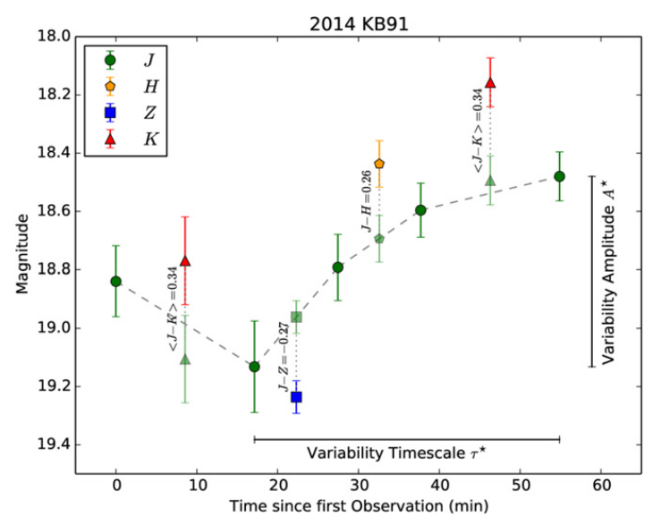

Das Verständnis der Zusammensetzungen von NEOs ist wichtig, um ihre dynamische und physikalische Evolution zu rekonstruieren, das Schadenspotenzial im Falle eines Einschlags zu bewerten und die Ressourcen abzuschätzen, die in naher Zukunft aus diesen Körpern gewonnen werden können. Zudem gibt es immer noch eine Diskrepanz zwischen der Zusammensetzungsverteilung von meteoritischem Material, das auf der Erde gefunden wurde, und der Gesamtzusammensetzung der NEO-Verteilung.
Der gebräuchlichste Weg, die Zusammensetzungen von Asteroiden zu untersuchen, besteht darin, spektroskopische Beobachtungen durchzuführen: Wellenlängenabhängige Variationen der Oberflächenreflexion können diagnostisch für die Zusammensetzung eines Objekts sein und eine taxonomische Klassifikation ermöglichen. Allerdings sind spektroskopische Beobachtungen normalerweise nur für helle und große Asteroiden möglich und erfordern große Teleskope für kleine Asteroiden.
Durch die Anwendung eines speziellen Beobachtungsmodus und einer Strategie sind wir in der Lage, die taxonomische Klassifikation selbst der kleinsten NEOs zu bestimmen.
Die meisten NEOs werden entdeckt, wenn sie sich in der Nähe der Erde befinden, da dies der Zeitpunkt ihrer maximalen Helligkeit ist. Nach ihrem Vorbeiflug verblassen sie schnell, während sie sich von der Erde entfernen. Indem wir sie so schnell wie möglich nach ihrer Entdeckung beobachten, können wir sogar kleine NEOs mit kleinen bis mittelgroßen Teleskopen beobachten. Diese Beobachtungsstrategie wird als Schnellreaktion bezeichnet.
Außerdem führen wir keine Spektroskopie durch, die ein vollständig aufgelöstes Reflexionsspektrum über einen bestimmten Wellenlängenbereich liefert, sondern Spektrophotometrie, die grobe spektrale Informationen liefert, indem sie Photometrie in standardisierten Filterbandbreiten durchführt. Photometrie ist einfacher zu erhalten und effizienter als Spektroskopie bei kleineren Teleskopen.
Durch die Kombination von Spektrophotometrie und Schnellreaktionsbeobachtungen sind wir technisch in der Lage, die taxonomische Klasse jedes neu entdeckten NEOs einzuschränken.
Wir führen unsere Beobachtungen im optischen und nahen Infrarotbereich durch, die besonders aussagekräftig für die Asteroidentaxonomie sind, und verwenden dabei zwei verschiedene Instrumente und Teleskope: WFCAM am UKIRT (3,8 m, gelegen auf Mauna Kea, Hawai’i) und RATIR am 1,5 m Teleskop in San Pedro Martir, Mexiko. Die Zielauswahl, Beobachtung, Datenreduktion und Analyse sind für beide Teleskope größtenteils automatisiert, was einen hohen Durchsatz mit minimaler menschlicher Interaktion ermöglicht. Zielasteroiden werden basierend auf ihrer Beobachtbarkeit ausgewählt; helle NEOs werden von RATIR beobachtet, schwächere von UKIRT.
{kind=link}

Die ersten Ergebnisse von UKIRT wurden in AJ veröffentlicht, und wir haben in der Zwischenzeit auch einige Ergebnisse von RATIR veröffentlicht…
Update: Weitere Ergebnisse von UKIRT und RATIR sind jetzt verfügbar (siehe unten).
Bibliographie
-
Navarro-Meza, S., D. E. Trilling, Mommert, M., D. E., Butler, N., Reyes-Ruiz, M. (2024), “Taxonomy of Subkilometer Near-Earth Objects from Multiwavelength Photometry with RATIR”, The Astronomical Journal, 167, 163., publication
-
López-Oquendo, A., Trilling, D. E., Mommert, M. (2023), “A Spectrophotometric Taxonomic Survey of Small near-Earth Asteroids using UKIRT”, AAS/Division for Planetary Sciences Meeting Abstracts, 2023
-
Navarro-Meza, S., Mommert, M., Trilling, D. E., Butler, N., Reyes-Ruiz, M., Pichardo, B., Axelrod, T., Jedicke, R., & Moskovitz, N. (2019), “First Results from the Rapid-response Spectrophotometric Characterization of Near-Earth Objects Using RATIR”, The Astronomical Journal, 157, 190., publication, arxiv
-
Mommert, M., Trilling, D. E., Borth, D., Jedicke, R., Butler, N., Reyes-Ruiz, M., Pichardo, B., Petersen, E., Axelrod, T., & Moskovitz, N. (2016), “First Results from the Rapid-response Spectrophotometric Characterization of Near-Earth Objects using UKIRT”, The Astronomical Journal, 151, 98., publication, arxiv